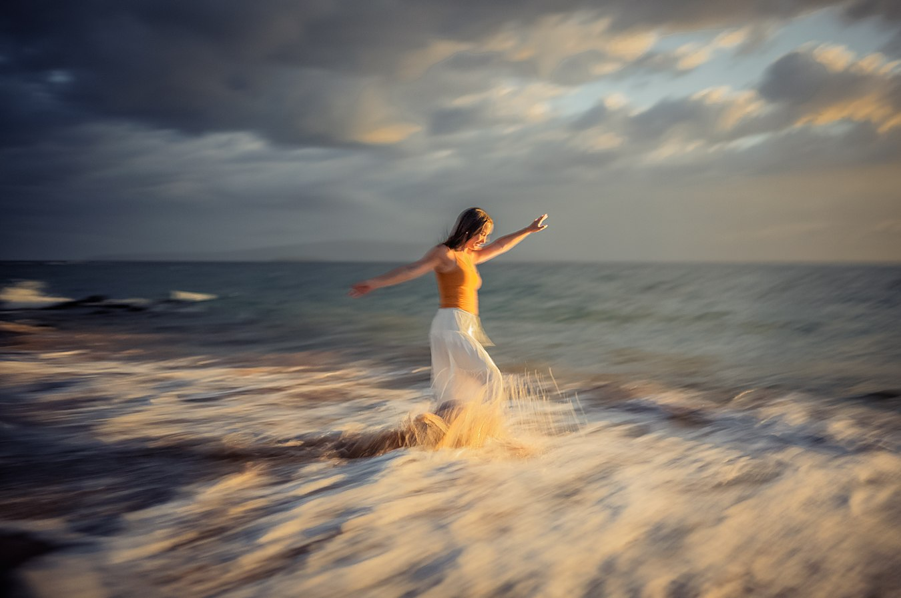
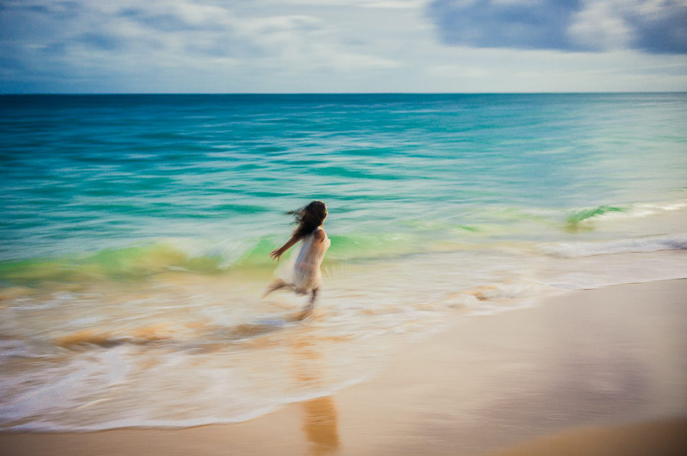
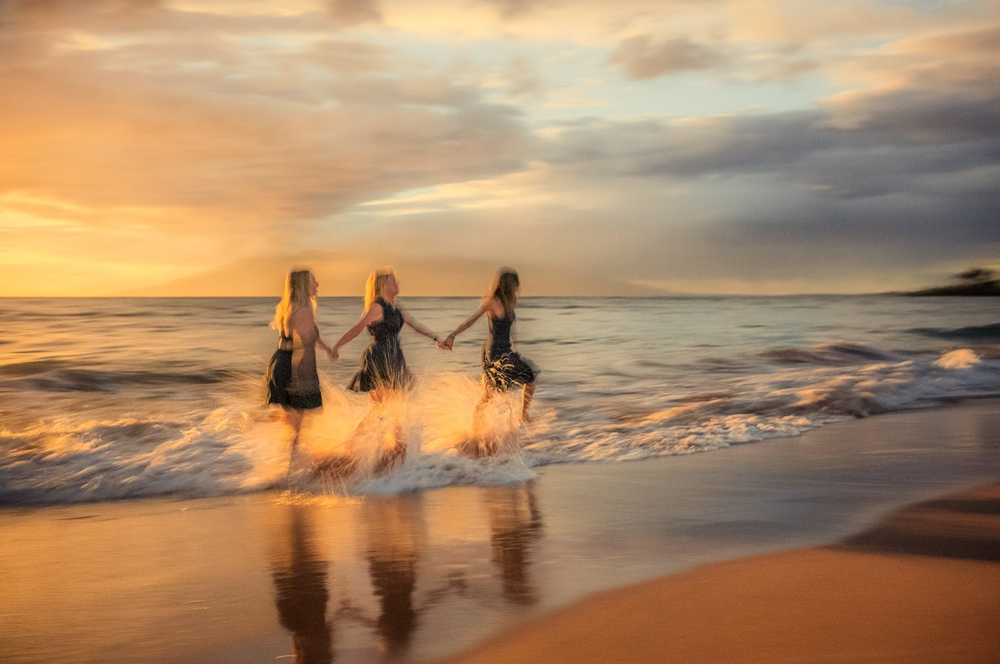
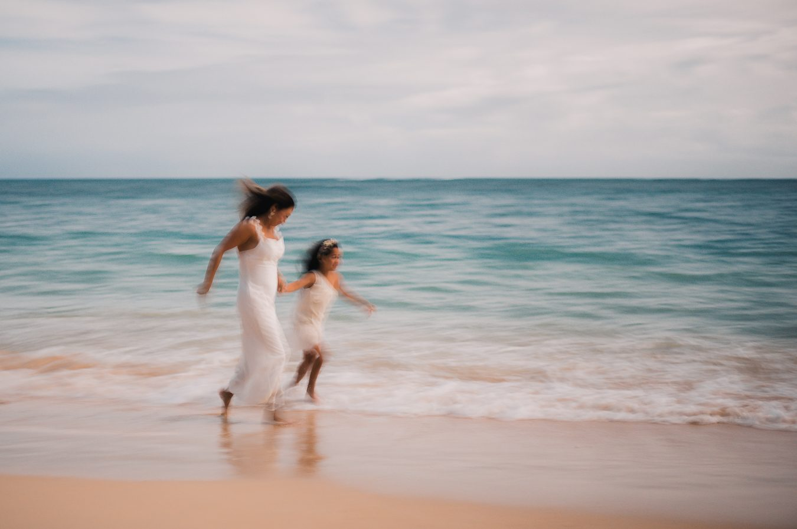
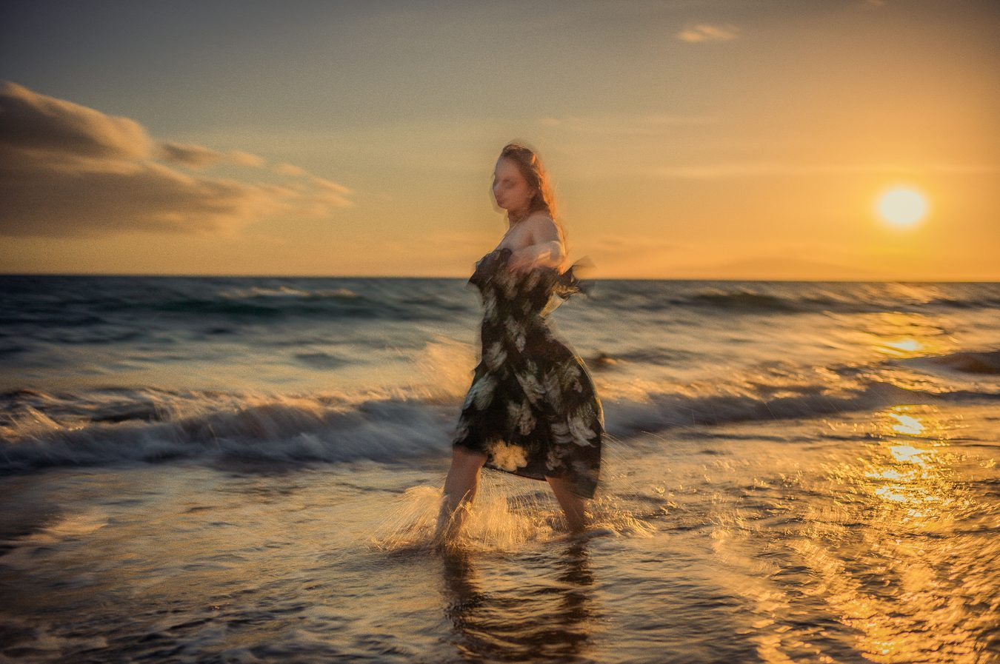
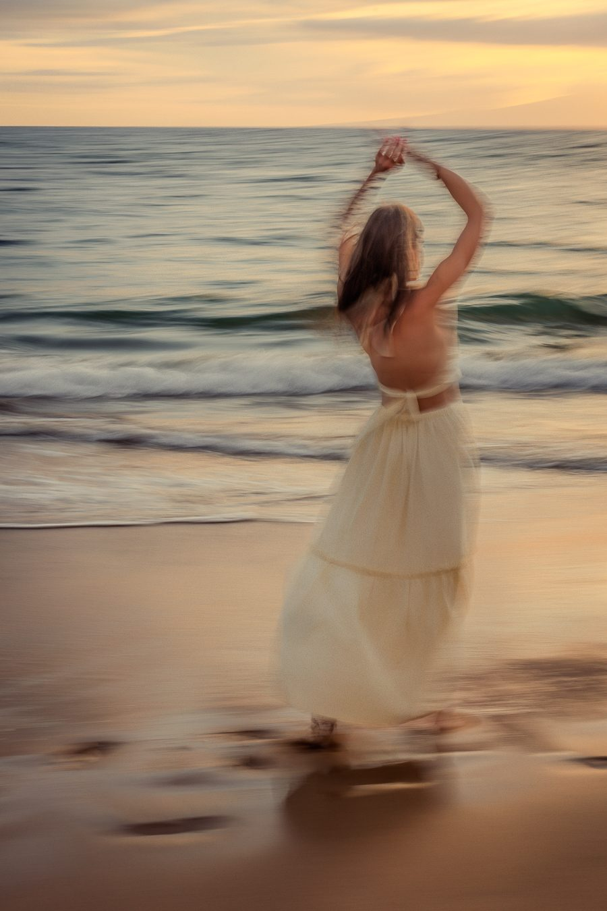
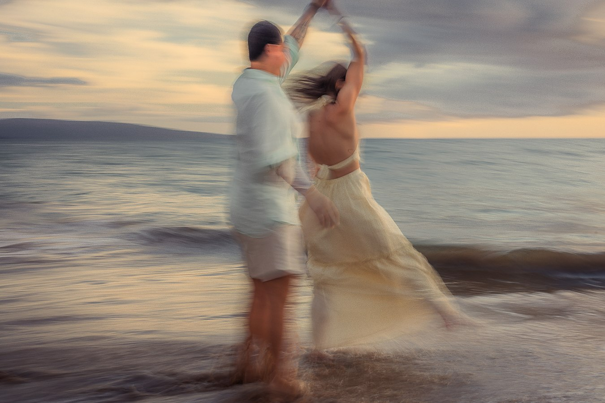

Some moments are truer when they blur.
An add-on inspired by Monet, Renoir, and Degas — motion, light, and color captured in-camera, the way a memory actually feels.
The blur is the point.
A fast shutter freezes a single instant and calls it the truth. But that is rarely how we actually remember a moment — we remember the color of the light, the shape a dress made in the wind, the general direction someone was running, laughing. Not a frozen instant. A feeling in motion.
In 1872, Claude Monet painted the harbor at Le Havre at first light and called it simply Impression, Sunrise — loose, hazy, more mood than detail. When it was shown in Paris in 1874, a critic named Louis Leroy mocked it as unfinished, sneering that it was merely "an impression." The painters wore the insult as a badge. Impressionism was born from a picture that refused to hold still.
It is not a blurry mistake. It is a specific, practiced technique — the same shutter speed and framing choice, made on purpose, every time.
Built on purpose, one slow shutter at a time.
This is not a filter dragged over a sharp photograph after the fact. It is shot this way from the first frame: a deliberately slow shutter speed, timed to how fast you are moving, sometimes with the camera panning to match you. Light streaks, fabric dissolves into brushstrokes, and the wave keeps moving even after the shutter closes.
It is also, honestly, a harder way to shoot. There is no single correct exposure — every frame is a small gamble on timing, and most of a set gets discarded before we find the ones where the motion and the light agree with each other. That is why it is offered as a bonus set of frames alongside your standard gallery, not a replacement for it.
moving frameDELIBERATE PAN & DRAG, NOT AUTO-BLUR
onlyTIMED TO MAUI'S LOW, WARM LIGHT






Renoir had his dance floor. Degas had his ballet studio.
Renoir filled Luncheon of the Boating Party with the blur of real conversation and movement — nothing posed, everything alive. Degas spent decades chasing dancers with loose, rapid strokes because a body mid-turn told him more than a body standing still ever could.
A couple swaying together at the waterline, hair catching the wind, isn't so different. We're not asking anyone to pose for this — we're asking them to move, and letting the camera do the rest.

"Without a sharp edge to hold onto, the eye goes straight to the feeling."
Choose the Impressionism add-on when you want a companion collection that reads like a memory rather than a document — dissolving light, moving color, and a little bit of the ocean left in every frame.
Choosing Impressionism.
Will we still get our regular sharp, color gallery?
Yes. The Impressionism add-on is a bonus collection alongside your standard gallery — it doesn't replace your sharp, color images, it stands next to them.
Why is this offered as an add-on?
It's a distinct in-camera technique with its own timing, framing, and much higher discard rate than a standard portrait — closer to a separate mini-session than a one-click edit, so it's priced and offered separately.
Which sessions work best for this?
Sessions with room to move — Sunrise, Sunset, and Turquoise Water sessions are ideal. It works beautifully for couples, solo portraits, and kids running in the surf; it's less suited to a formal, posed family group.
Can we ask for a specific movement, like a twirl or a walk along the shoreline?
Absolutely — tell us what you have in mind when you book, or we're glad to suggest movements that tend to work well in this style.

Laurence Balter
Laurence has spent more than 25 years photographing families and couples on Maui, and has always kept one foot in fine art — the Impressionists especially, for the way they trusted color and motion over precision.
This add-on is his answer to a question he'd been circling for years: what would it look like if a Maui portrait session let the ocean move the way Monet let the harbor move?